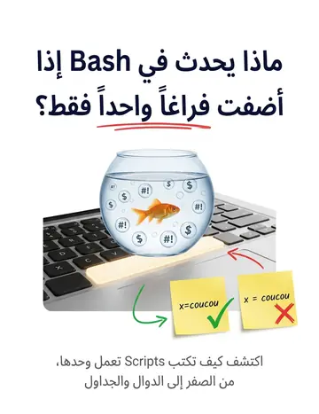
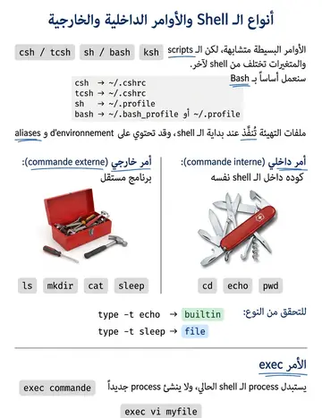

Le shell interpréteur & les types de commandes
الشيل كمفسّر وأنواع الأوامر
الشرح بالعربية
الـ Shell لغة برمجة كاملة: تفسير فوري، متغيرات، أوامر داخلية مدمجة (cd, echo, pwd, read, export, set) وأوامر خارجية ملفات (ls, sleep). الأمر type -t يحدد النوع (builtin أو file)، وps يعرض اسم الشيل الجاري، وbash --version نسخته.
Illustrations de la leçon
2 planches · cliquez pour agrandir

Contenu de la leçon
Le cours en français, avec les termes techniques et les exemples.
Le shell est un environnement puissant pour l’automatisation et le développement de
scripts complexes sous Unix :
Un Langage de Programmation Complet :
Gestion des Variables :
Possibilité de définir et manipuler des variables pour stocker et traiter des données.
Tests et utilisation des Boucles :
Structures conditionnelles (if, else) et boucles (for, while) pour automatiser les tâches.
Opérations sur Variables :
Calculs, concaténations et manipulations avancées de chaînes de caractères.
Définitions des Fonctions :
Capacité de définir des fonctions pour structurer le code et réutiliser des blocs d’instructions.
LE SHELL : INTERPRÉTEUR DE
COMMANDES
La commande ps: Donne le nom du SHELL
La commande bash –version : Donne la version du SHELL
LE SHELL : INTERPRÉTEUR DE
COMMANDES
l’interpréteur utilisé est bash
Le shell distingue deux sortes de commandes :
les commandes internes : le code est implanté au sein de l’interpréteur de commande (cd , echo , pwd,…)
les commandes externes : le code se trouve dans un fichier ordinaire (ls, mkdir, cat, sleep,…)
Syntaxe :
type –t Commande
Builtin : Commande Interne
File : Commande externe
COMMANDES INTERNES ET EXTERNES
COMMADES INTERNES ET EXTERNES
Example :
$ type -t sleepfileLa commande sleep est identifiée comme un fichier, c'est donc une commande externe.
$ type -t echobuiltin
La commande echo est identifiée comme une commande interne du shell (builtin).